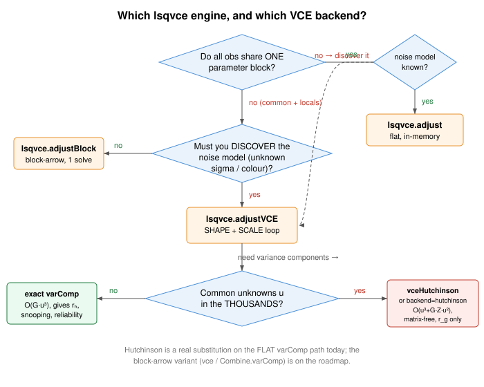
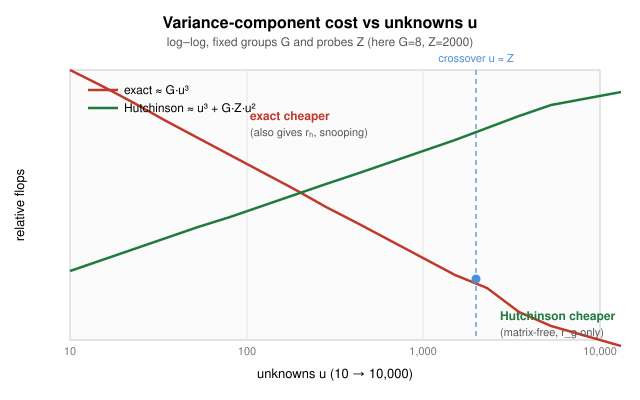

A decision aid: pick the right front door for your problem's size and structure, and the right variance-component backend for its scale.
lsqvce has three solving front doors and two variance-component backends. This
page is the map. For a runnable, build-your-own-case walk-through see
examples/demo_workflow.m; for the six failure modes see
examples/demo_lsqvce.m.
Pick by the SHAPE of the problem, not by taste.

| Engine | Use when | Cost / memory |
|---|---|---|
| lsqvce.engine.adjust | Every observation sees the SAME u unknowns; one covariance;
no per-system nuisance parameters. |
Flat normal/QR, O(u³) solve; batches streamed so
n is never materialised. |
| lsqvce.engine.adjustBlock | A shared COMMON block of nc unknowns plus PER-SYSTEM LOCAL
blocks (arc biases, scales) you want eliminated exactly. |
Block-arrow Helmert reduction; forms only the reduced
nc×nc common normal, one GLS solve. |
| lsqvce.engine.adjustVCE | You do NOT know the noise model and want the data to supply it (separable covariance, coloured noise, unknown sigma ratios). | adjustBlock inside an iterative SHAPE (temporal whitening) + SCALE (VCE) loop until residuals whiten and components agree. |
adjust. Common + per-system locals, known noise →
adjustBlock. Must discover the noise model →
adjustVCE.Once you need per-group variance components, there are two estimators. They give the SAME answer; they differ in cost and in what extra diagnostics they can produce.

| Backend | Cost | Produces | Reach for it when |
|---|---|---|---|
| exact (varComp default) |
O(G·u³) — forms
N⁻¹N_g per group. |
Per-group components AND per-observation redundancy
rₕ, data snooping, (w,r) reliability, the
Σrₕ=m−u integrity guard. |
u up to a few thousand. Faster AND exact AND fully
diagnostic in that range. |
| hutchinson (vceHutchinson, or backend=hutchinson) |
O(u³ + G·Z·u²) — one Cholesky,
then Z random probes per group; never forms
N⁻¹. |
Per-group components and estimated r_g ONLY (each with a
Monte-Carlo standard error ~ 1/√Z). No per-obs
rₕ, no snooping, no guard. |
u in the thousands (e.g. a high-degree gravity field),
where O(G·u³) dominates. |
u ≈ Z (probe count), so: exact below a few thousand unknowns,
Hutchinson above. Larger Z tightens the estimate (error
~ 1/√Z) at linear cost; Z=2000–4000 gives
visibly tight agreement on well-conditioned problems.lsqvce.engine.vceHutchinson (retired R5 M2) and
lsqvce.engine.varComp (retired R5 M2)(...,'backend','hutchinson').
On the block-arrow paths (lsqvce.engine.vce,
Combine.varComp) 'traceMethod','hutchinson' is only a
machinery check; the streaming block-arrow substitution is on the roadmap.% Flat, known noise
[sol, D, V] = lsqvce.engine.adjust(u, batchFcn, nBatch);
% Common + per-system locals (loaders from lsqvce.engine.makeLoader)
R = lsqvce.engine.adjustBlock({L1, L2}, days);
% Discover the noise model (SHAPE + SCALE)
R = lsqvce.engine.adjustVCE({L1, L2}, days, 'GroupBy', 'obsType', ...
'Shape', struct('MaxOrder', 60), 'Scale', struct('MaxIter', 8)).run(); % constructor-only since 2.0
% Variance components, exact (also gives r_i, snooping)
VC = lsqvce.engine.varComp(u, batchFcn, nBatch, groupFcn, nGroup);
% Variance components, matrix-free (large u)
VC = lsqvce.engine.varComp(u, batchFcn, nBatch, groupFcn, nGroup, ...
'backend','hutchinson', 'probes',4000);
lsqvce.engine.adjustVCE (retired R5 M4: Model "vce" is a policy of the joint estimator), lsqvce.engine.varComp (retired R5 M2), lsqvce.engine.vceHutchinson (retired R5 M2), lsqvce.engine.vce